3D smallProjects projects
Here are a collection of my smaller projects, most of these are things I have designed or found online to 3D
print.
I have a Creality Ender3 3D printer which I have used for all these prints.
Phone charging mount
I wanted a wall mount to hold my phone while it was charging. I had seen some online but could not find any
designs I liked. I found these 2 designs and combined them.
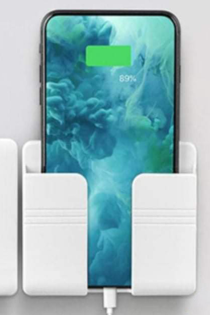
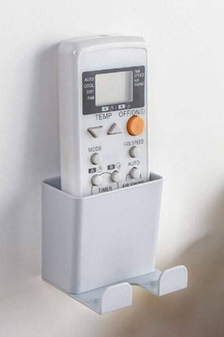
Reference images I used.
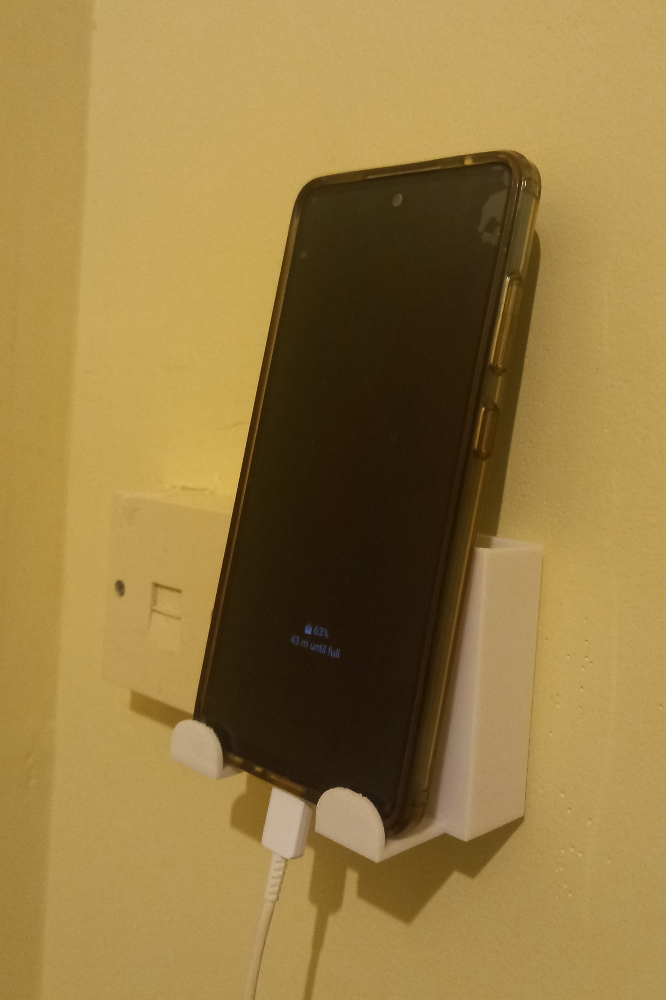
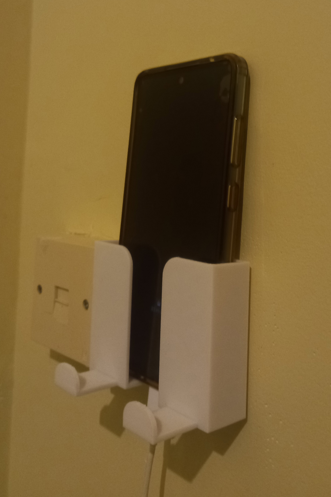
Final design.
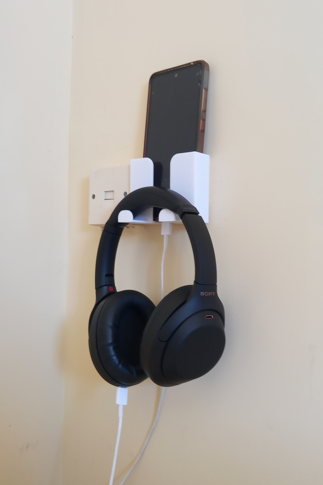
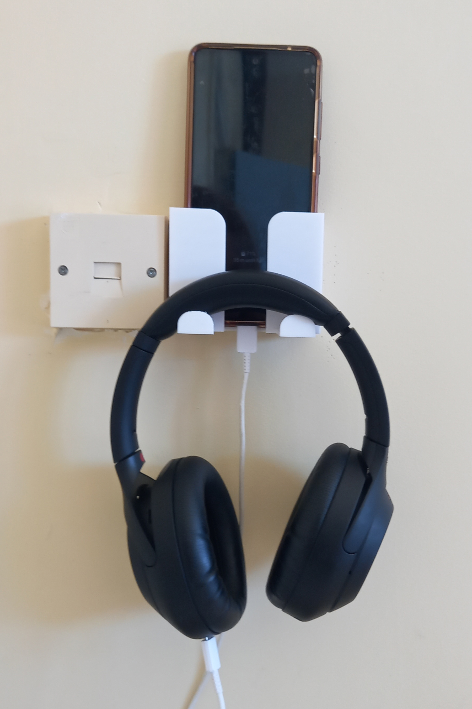
The feet can also hold headphones.
Tallneck Robot
This is a robot from a game called Horizon Zero Dawn, I found the design on
Thingyverse.
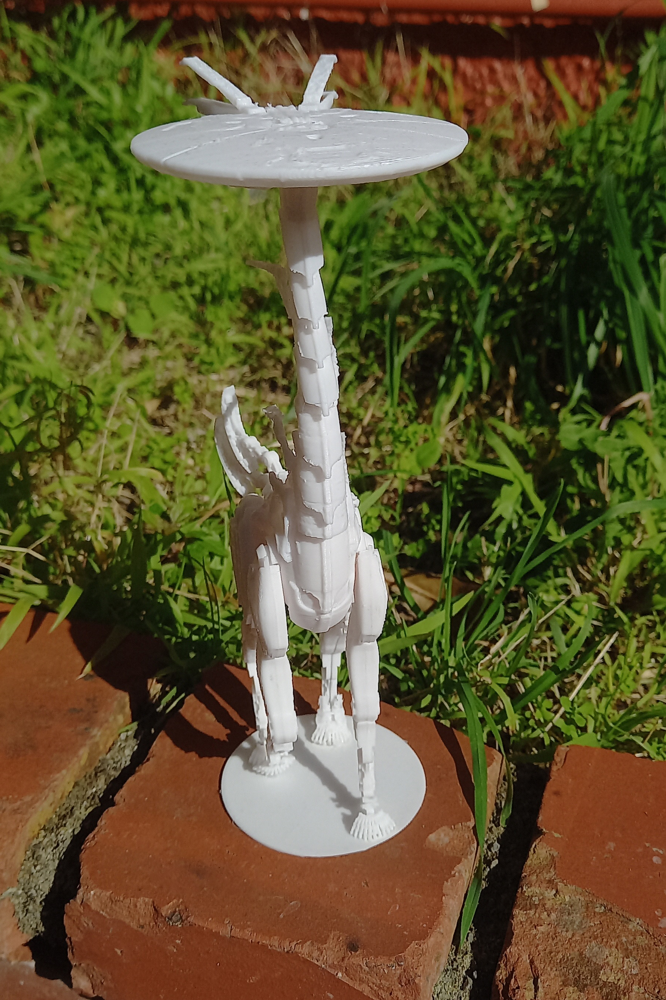
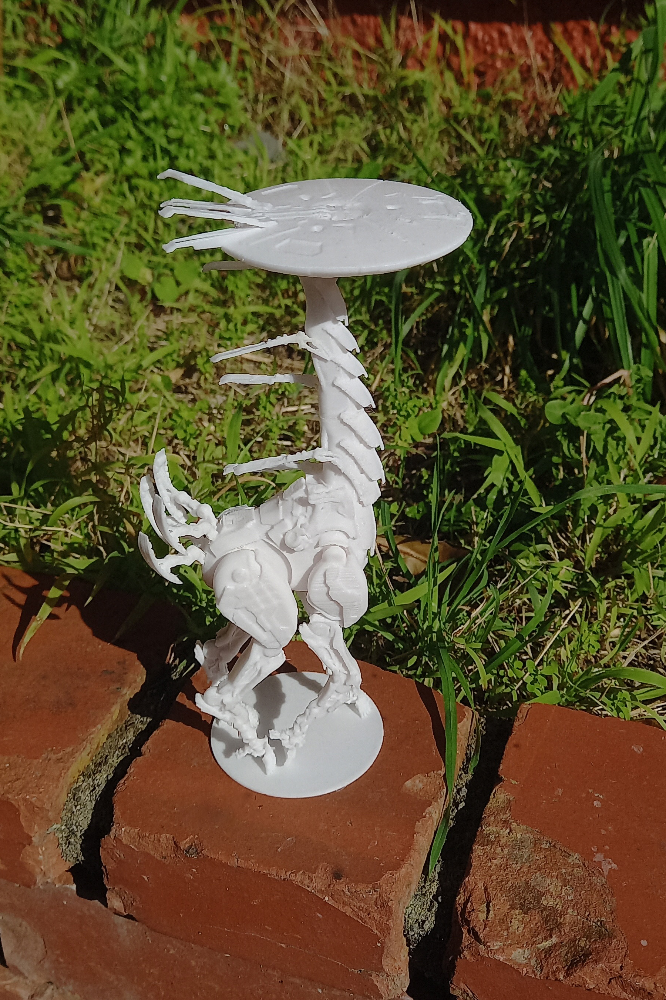
Octopus
Found on
Thingyverse but I didn't like the mouth so
I
changed it with Blender.
The arms are articulated and are printed as one part.
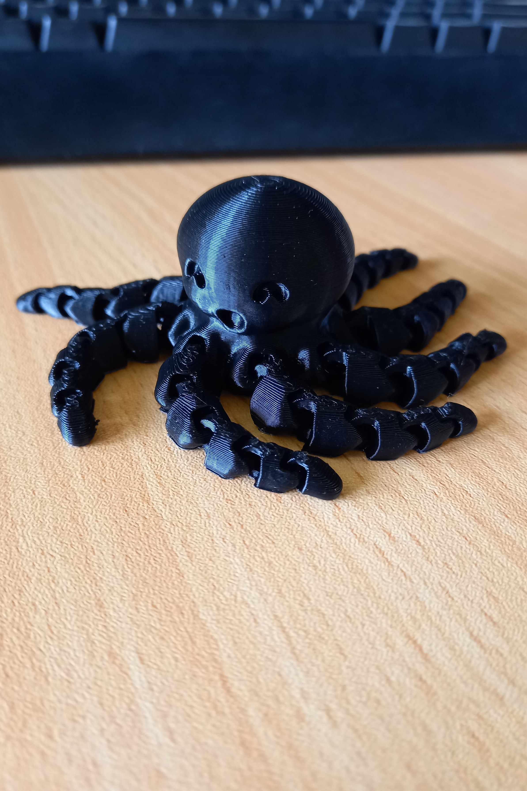
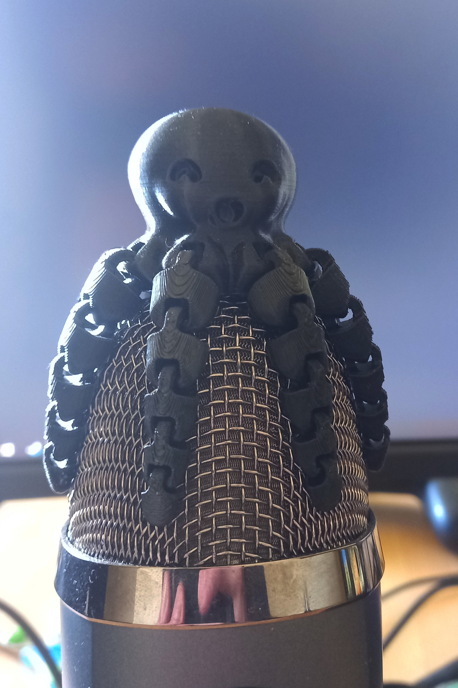
Chains
The articulated octopus inspired me to design some chains. I found this design on
Thingyverse but wanted to make my own.
Here are some attempts with a USB for scale.
I will probably use this design in some later project, it would look good as decoration for some models.
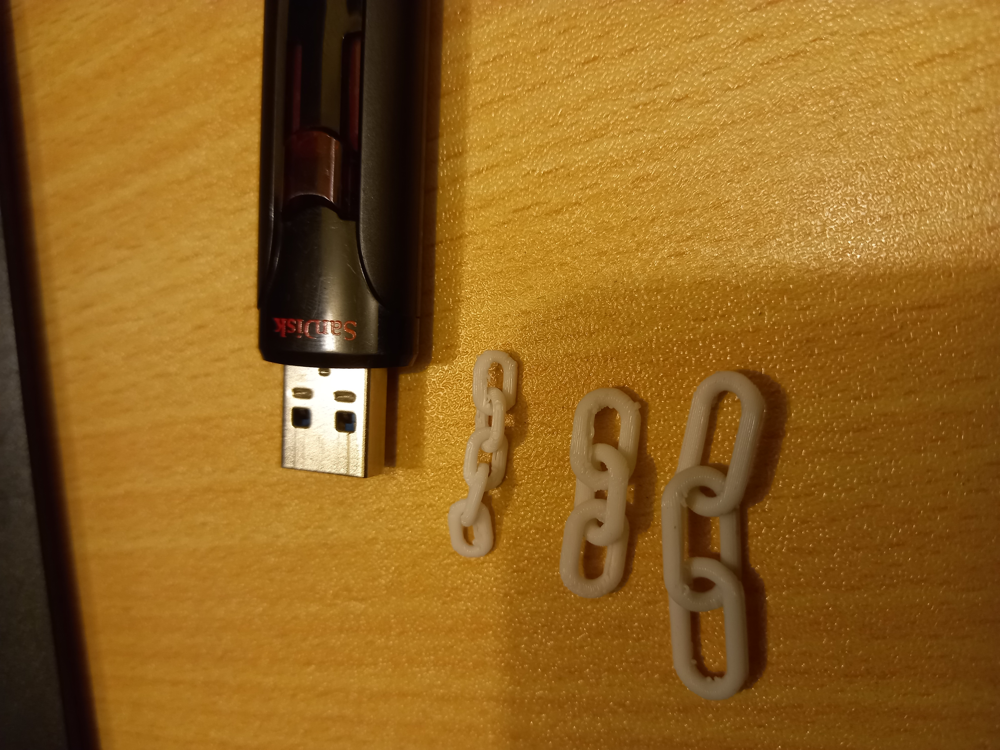
Baby Turtle
Don't ask, printed it as a farwell gift for a friend.
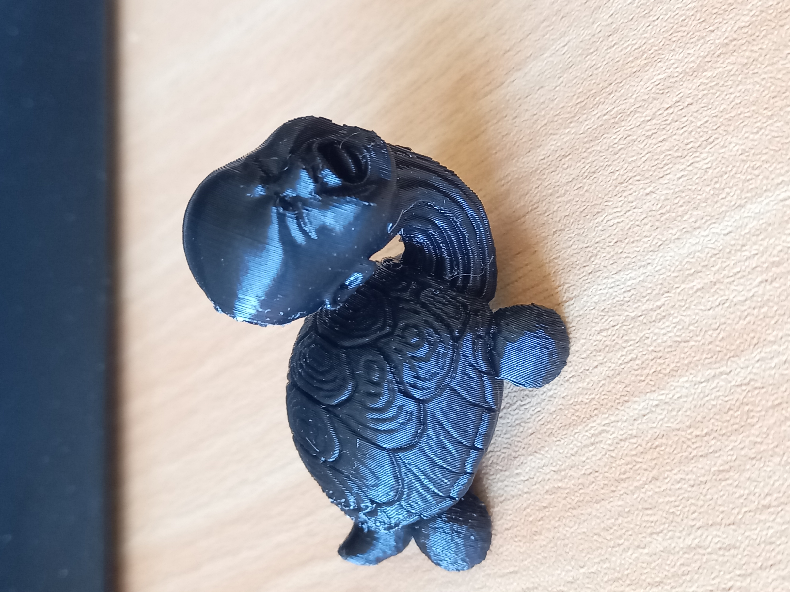
Curtain Hooks
I needed a few curtain hooks so I wanted to see if I could make some my self. These turned out to be around
4
times cheaper than if I was to by some from the store.
This is mainly due to the low quantity.
They fit well and have not broken yet.
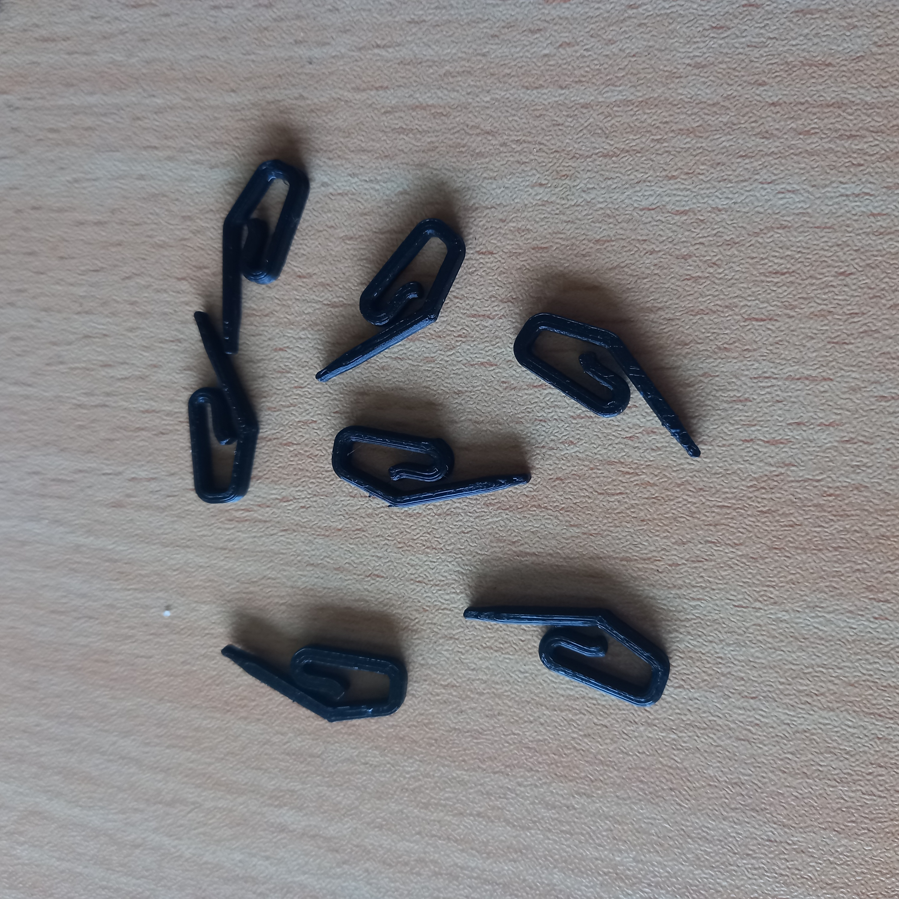
Plant Pot
This was a gift, I found it on
Thingyverse. It was
designed as a plant pot but it makes a great pencil holder.
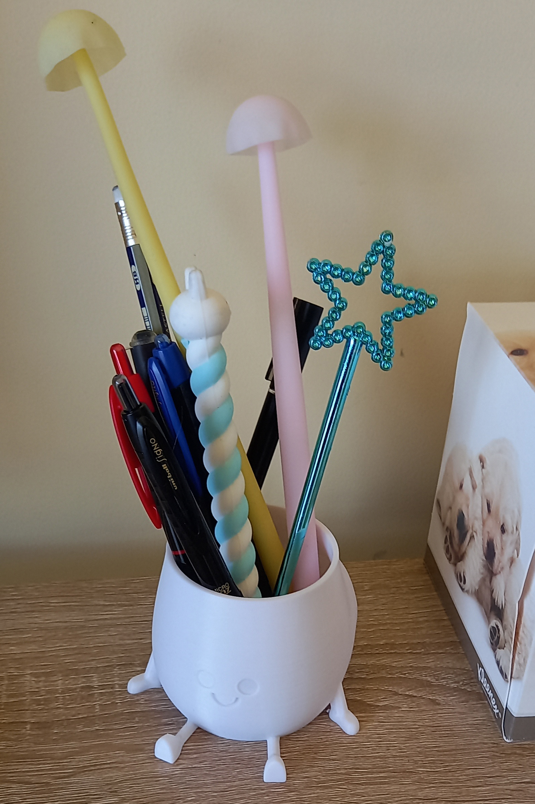
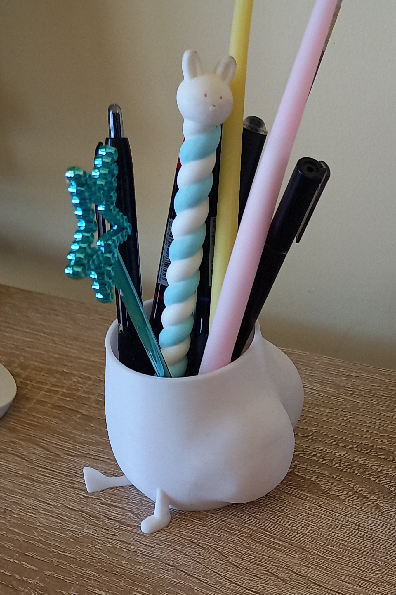